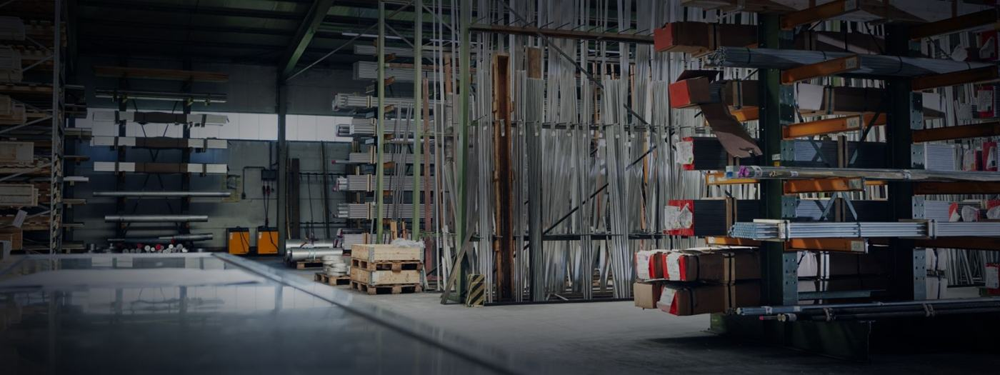
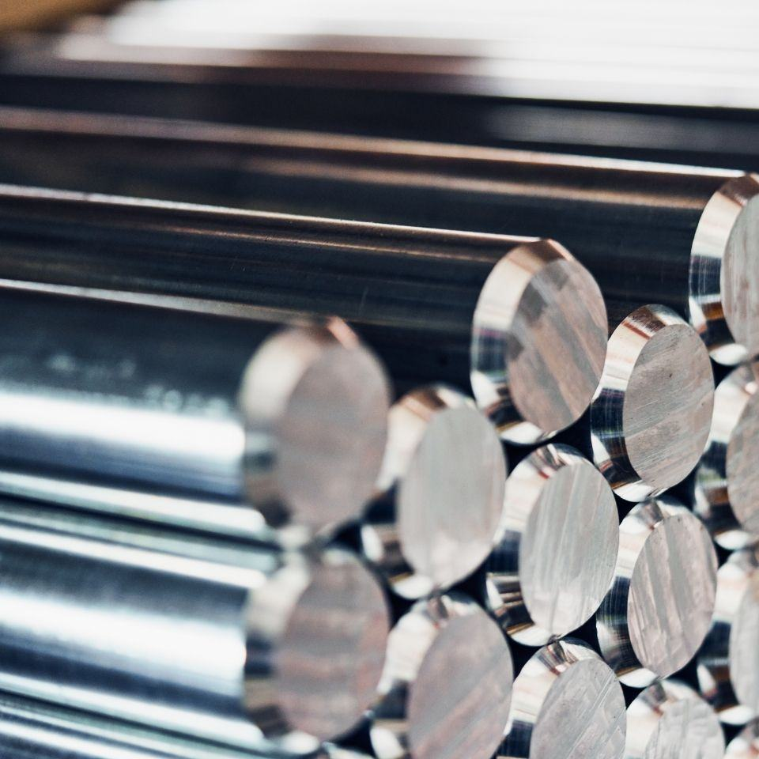
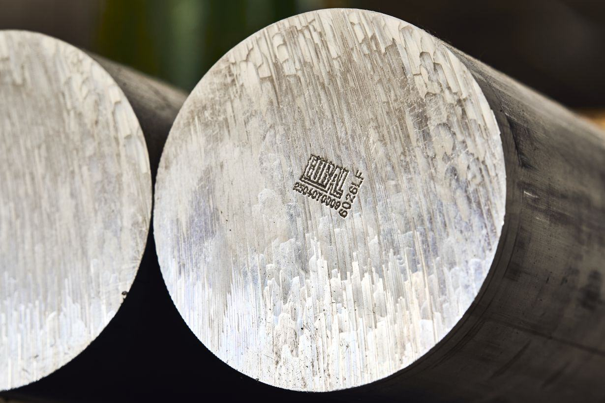
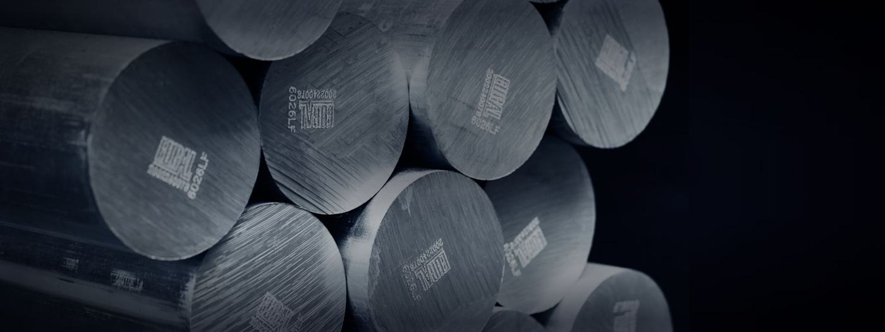

Wissen
Fachbeiträge rund um Werkstoffe, Zerspanung, Normen und bleifreie Alternativen – aus der täglichen Praxis unserer Beratung.

2.1, 2.2, 3.1 oder 3.2: Welches Werkstoffzeugnis Sie wirklich brauchen
Was in welchem Zeugnis steht, wer es ausstellen darf – und was beim Zuschnitt mit der Rückverfolgbarkeit passiert.
Weiterlesen →
6060, 6082, 2007 oder 6026 LF: Welche Aluminiumlegierung passt zu Ihrem Bauteil?
Vier Fragen, ein Entscheidungsbaum und eine Kennwerttabelle – von der Legierung über den Zustand bis zur Lieferform.
Weiterlesen →
CuZn39Pb3 ersetzen: Welche bleifreie Messinglegierung passt zu welcher Anwendung?
CW724R, CW510L, CW511L oder CW725R? Entscheidungsmatrix für den Ersatz von CW614N – mit Fristen.
Weiterlesen →
Klasse A oder Klasse B: Welche Toleranz Sie bei gezogenen Stangen erwarten dürfen
Warum normkonforme Stangen für Ihren Stangenlader zu krumm sein können – und was in die Bestellung gehört.
Weiterlesen →
Kupfer zerspanen: CW118C Tellurkupfer und die Alternativen
Hohe Leitfähigkeit und vernünftige Zerspanbarkeit: Cu-ETP, CuTeP, CuSP und CuCr1Zr im Vergleich.
Weiterlesen →
R410, H080, T651: Was die Zustandsangaben auf Ihrer Bestellung bedeuten
Zwei Systeme, zwei Logiken: EN 1173 bei Kupferwerkstoffen, EN 515 bei Aluminium – und wo es schiefgeht.
Weiterlesen →
Zerspanbarkeit von Messing: die bleihaltigen und bleifreien Legierungen im Vergleich
CW614N, CW728R, CW724R, CW510L, CW509L, CW508L: Was der Wechsel auf bleifrei kostet.
Weiterlesen →
EN AW-6026LF im Lebensmittelkontakt: was die Prüfungen zeigen
Sehr niedrige Wismut-Migration – und trotzdem keine pauschale Freigabe. Was Sie selbst bewerten müssen.
Weiterlesen →
Blei in NE-Metallen: Was CLP, RoHS, ELV, REACH und die Trinkwasserregeln verlangen
Welche Fristen gelten für bleihaltiges Messing und Aluminium – und welche bleifreien Werkstoffe kommen in Frage?
Weiterlesen →
Bleifreie Aluminium-Automatenlegierungen: EN AW-2033, 2077 und 6026LF im Vergleich
Bleifrei zerspanen: Was EN AW-2033, 2077 und 6026LF können – und was sich in der Fertigung ändert.
Weiterlesen →Umarbeitung von Messing
Späne und Reststücke sinnvoll verwerten: So funktioniert das Umarbeitungskonto bei Müller & Welte.
Weiterlesen →Noch eine Frage zum Werkstoff?
Unsere Vertriebsteam berät Sie gerne – kompetent, ehrlich und ohne Umwege.